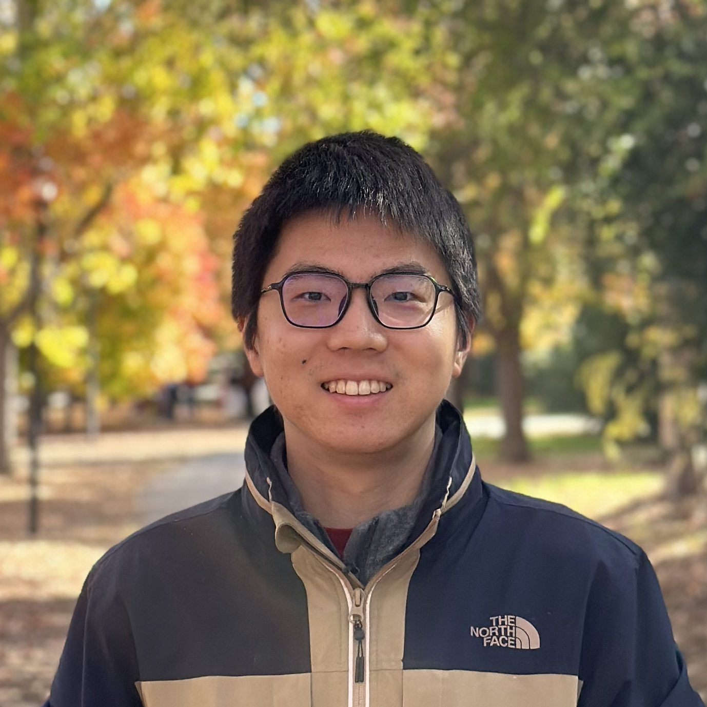

Qizheng Zhang

Computer Science PhD student, Stanford University
qizhengz {at} stanford {dot} edu
I am a fifth-year CS Ph.D. student at Stanford University, advised by Kunle Olukotun in the Pervasive Parallelism Lab. I am finishing my Ph.D. and looking for full-time roles starting January 2027.
I work on recursive self-improvement (RSI) and agent infrastructure: AI systems that learn and improve from their own experience, and the infrastructure to run and test them. I have worked with industry partners including SambaNova Systems, Tensormesh, Eigent AI, and Microsoft Research. My work spans the stack: context and harness, benchmarks and environments, and systems.
Context and harness. Stateless Language Agents (SLA) [preprint] is a framework for long-running automated research with coding agents. It keeps making progress on very long runs (> 1B tokens) where other agent frameworks stall. The key is to keep experience out of agent conversations: the harness stores what was tried and how it did, and builds a fresh, focused context for each agent call. Agentic Context Engineering (ACE) [ICLR 2026] lets agents improve from experience through structured evolving context, with no weight updates. ACE has 600+ citations and 1.5k+ stars on GitHub, and runs in production at Anyshift and SCX.ai. Other related work: Meta-Harness [COLM 2026], Agentic Plan Caching [NeurIPS 2025].
Benchmarks and environments. I build tasks, environments, and data pipelines for agent benchmarks and datasets: FrontierCS [ICML 2026], FrontierCS 2, FrontierSmith [NeurIPS 2026 Spotlight], and OpenRSI-Index. I also worked on RL training for SETA [NeurIPS 2026], a large set of terminal environments for agents.
Systems and infrastructure. I built ML systems for online learning and LLM inference: Caravan [OSDI 2024], and CacheGen [SIGCOMM 2024] and CacheBlend [EuroSys 2025 Best Paper] in the LMCache project. In a previous life, I worked on computer networking and operating systems. I had a lot of fun hacking OS kernels and building low-latency network transport for video streaming.
I have worked with industry partners including SambaNova Systems, Tensormesh, Eigent AI, and Microsoft Research.
The pronunciation of my first name (Qizheng) is very close to that of "keygen" in public key encryption. I also go by Alex.
Last updated: November 2026